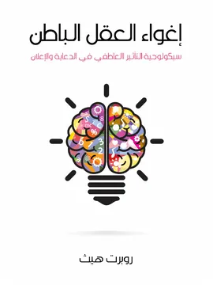

إغواء العقل الباطن: سيكولوجية التأثير العاطفي في الدعاية والإعلان

قراءة عربية أصلية محددة النطاق في الصفحات 9 إلى 14 من ملف PDF المرتبط، وليست تلخيصا كاملا للكتاب. نناقش ما تدعمه هذه المقاطع فقط.
إغواء العقل الباطن: كيف يؤثر الإعلان دون إقناع؟
يفتتح هيث تمهيده بمقولة ليكوك إن الإعلان «علم اختطاف عقل الإنسان لاستنزاف المال منه»، ويلاحظ صعوبة تذكر إعلان واحد. ويرى أغلبنا أنها لا تؤثر فينا إلا لسذاجتنا؛ لأننا نفترض أن الإقناع عملية عقلانية لا تتم دون تذكر رسالة إعلانية. لكن شدسون يقرر في «الإعلان: الإقناع الصعب» أنها أقل تأثيرًا بكثير مما يدعي المعلنون، وأن رسائل الوكالات تقوم على التخمين لا التحليل. ويتفق هيث معه؛ فبعد عمله في تسع وكالات على مدار ٢٣ عامًا يعترف باعتماد الحملات على الحظ والمصادفة. فإذا كانت غير مؤثرة فلماذا المستعينة بها هي الأنجح؟ فلها طرق تأثير لا نعيها؛ فيقول شدسون إن إعلانات التليفزيون قد تكون أقوى لأن المشاهدين قلما يلتفتون إليها، اعتمادًا على أبحاث كروجمان. واعتمد في «القوة الكامنة للإعلان» على فكرته، وتنامى منذئذ قبول أن الخاضع لقليل من الانتباه قد يفيد. وهذه الآلية هي «إغواء العقل الباطن»، ولا علاقة له بالرسائل دون الواعية؛ فالعناصر تحت سمعنا وبصرنا ونختار تجاهلها. ويجمع النموذج أفكارًا عن آليات الإدراك والتفكير والتذكر طرحها داماسيو ودينيت ولودو.
زاوية وحدود القراءة
قراءة موجزة من ص ٩ إلى ص ١٤ من أصل ٢٩٨ صفحة، تعرض تمهيد الكتاب، لا الكتاب كاملًا.
الطبعة والقراءة
هذه الترجمة العربية صادرة ومتاحة مجانًا بموجب اتفاق قانوني بين مؤسسة هنداوي وجون وايلي أند صنز، إنك. حقوق الترجمة محفوظة لمؤسسة هنداوي.
تنزيل PDF المجاني ↓ القراءة والمصدر الرسمي ↗